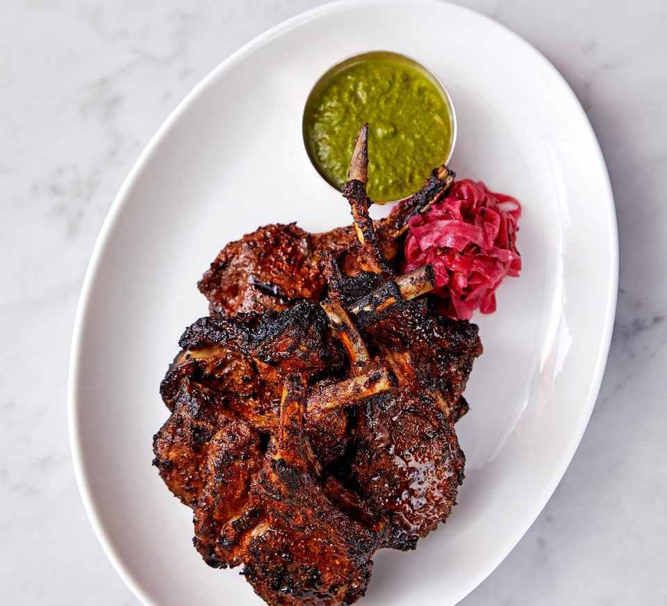

.jpg)
1. Remove the rind from the chops. Bring enough water to cover the chops to a
boil in a medium saucepan. Add the chops, return to a boil, and cook for 2-3
minutes. Drain the chops, rinse, and drain again.
2. Put the drained chops into a large nonstick saucepan and add all the remaining
ingredients, except the garam masala and herbs. Put the saucepan over medium
heat and stir until the milk begins to bubble Reduce the heat to low, cover, and
cook for 30 minutes, turning the chops occasionally.
3. Remove from the heat. Using tongs, lift the chops out of the saucepan and
shake the cooking liquid back into the saucepan, Strain the liquid and return to
the saucepan with the chops. Cook over medium heat, turning frequently, for 7-8
minutes, until the liquid has evaporated and the chops are browned.
4. Sprinkle the garam masala evenly over the chops and add the mint and cilantro.
Stir and cook for 1 minute. Serve immediately with a mixed salad.
Chile-cilantro Naan
Saffron and Almond Kulfi
Contact Us
Home page
Recipe Catalog
Butter Chicken